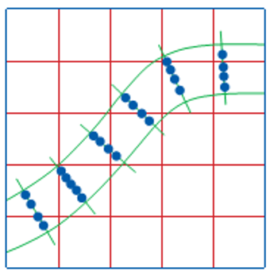
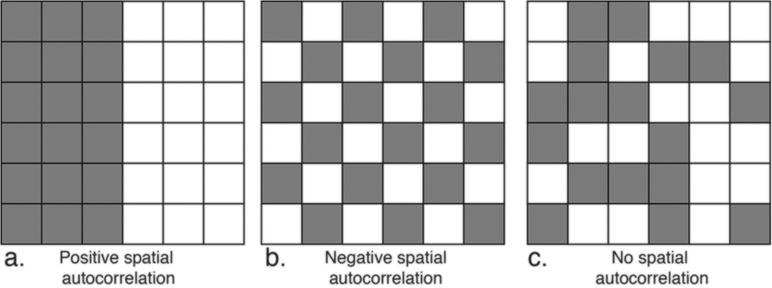

Spatial Sampling
TopHat Question 1
"Everything is related to everything else, but near things are more related than distant things." This statement is known as:
- Tobler's First Law of Geography
- Tobler's Last Law of Geography
- Geography's First Principal
- The Only Rule of GIS
The First Law of Geography
Everything is related to everything else, but near things are more related than distant things.
- Objects (or regions) near each other are more likely to be similar to one another
- This aspect of nature keeps coming up again and again in GIS!
- Objects (or regions) that are distant from each other are more likely to be different from each other

Sampling
You can think of sampling as the process of selecting points from within an area or population, called a sample frame.
- We collect information about some within the sample frame
- But we ignore most objects/locations
- Think back to Bonini's Paradox
- How we define our sample frame and choose our sample can determine the quality of our data
- We want to maximize representativeness of the sample
- But also minimize effort and expense associated with sampling
Sampling
Scientific sampling requires that each element in the sample frame have a known and pre-specified chance of selection.
- If some elements have a greater or lower chance of being selected our sample is said to be biased
- If every element of interest has an equal chance of being selected our sample is said to be unbiased
Random Sampling
In theory, a random sample is best. Its the "gold standard".
- Each location has equal chance of being selected (Unbiased)
- A foundational assumption of many statistical tests
- Easy to do, randomly select 𝑥,𝑦 coordinates
Random Sampling
Can be difficult to implement in practice.
- There is a chance, that all samples will miss important features
- May be barriers to accessing some features
- Remote or rugged terrain
- Private or restricted property
- Systematic under-responses
Random Sampling
We have some options to account for the drawbacks
- The "law of large numbers": as we collect more information, our sample will become increasingly representative of actual population values
- Larger sample sizes
- Repeated samples (aka "Bootstrapping")
- e.g., Take 30 random samples of 100 individuals, calculate an average for each sample, then average across samples
- Not always practical
- Requires more time and resources
TopHat Question 2
To collect a random sample, every object or location must:
- Have an equal chance of selection
- Be approximately the same size
- Not be close to other samples (i.e., equally dispersed)
- Not have a predefined chance of selection
Alternate Approaches to Sampling
Biased sampling
- Create a sample design that trades a sampling scheme for randomness
- Induce bias to the sample to:
- Save time or resources
- Account for relevant information about the sample frame
Systematic Sampling
A random starting point is chosen and a fixed sampling interval is used.
- Randomly select first of 3 students
- Then select every 3rd after that
- Choose a random starting point
- Then draw equally spaced grid
Systematic Sampling
A random starting point is chosen and a fixed sampling interval is used.
- General premise behind remote sensing (satellite data collection)
- Can be a good for areas that contain few features and abrupt boundaries
- e.g., Agricultural fields
- Not ideal for attributes that exhibit periodicity
- e.g., Roads
Systematic Sampling
A random starting point is chosen and a fixed sampling interval is used.
- General premise behind remote sensing (satellite data collection)
- Can be a good for areas that contain few features and abrupt boundaries
- e.g., Agricultural fields
- Not ideal for attributes that exhibit periodicity
- e.g., Roads
Stratified Sampling
Helps to address the issues with systematic sampling by sampling at random locations, but still applying some "systematic bias"
- Create a systematic sampling grid, then take random samples within cells
- Divide a population by certain attributes, then take random samples from sub-populations
- Gender, race, age, political party, etc.
Stratified Sampling
Helps to address the issues with systematic sampling by sampling at random locations, but still applying some "systematic bias"
- Can avoid over/under sampling regularly repeating features
- Account for important factors

Cluster Sampling
Intense sampling of features in clusters around a number of selected locations
- Locations can be selected for specific features:
- e.g., Shopping centers, known history of invasive species
- Or, locations can be selected at random across the grid
- More efficient use of time and resources
- May not be representative
Transect Sampling
Most commonly used along line features like roads, rivers
- Allows you to focus your efforts on features of interest
- Requires understanding of spatial structure for maximum effectiveness
-

TopHat Question 3
Which of these sampling methods are unbiased?
- Cluster
- Stratified
- Transect
- Random
How Many Samples?
The number of samples required is a function of how similar units of that population are.
- Spatial structure can vary wildly across a landscape
- A little knowledge of your study area will help you to establish ways to best stratify to maximize returns with minimal effort
- Need to balance effective coverage with the cost (in $ or time)
- Eg. short vs. long census form
Spatial Autocorrelation
When the values of objects are related to the values of nearby objects.
- If you know the value of one object, you can make a reasonable guess at the value of nearby objects
- That doesn’t mean they are the same; Correlation does not imply causation!
- There could be relationship between them, a relationship to a third object that determines the values of both, or a completely random coincidence 
Spatial Autocorrelation

Statistical Assumptions
Spatial autocorrelation is a problem when it comes to spatial statistics. Most statistics assume that there is no relationship between objects!
- If you know the value of one object, you can make a reasonable guess at the value of nearby objects
- By violating this assumption, we “break” many common statistics!
- For this reason, a separate field of spatial statistics explores different ways of accessing similar information, or we acknowledge this as a flaw in our assumptions
- It is also a benefit!: We can exploit spatial autocorrelation to our advantage
TopHat Question 4
Which number completes the sequence: 2, 4, 6, __, 10?
- 3
- 8
- 11
- 100
Statistical Interpolation
The process of “filling in the blanks” that you just performed is called interpolation
- If you know the value of one object, you can make a reasonable guess at the value of nearby objects
- Over a 2D or 3D surface we call this spatial interpolation
- Intelligent guesswork in which we attempt to make reasonable estimates of the values of a continuous field at places where we do not have measurements
Spatial Interpolation
Spatial interpolation only makes sense for a continuous field with numeric values.
- Rainfall, temperature, pressure
- Estimate between weather stations
- Elevation between measured locations
- With qualitative data, this can be problematic
Spatial Interpolation
All spatial interpolation methods incorporate distance to known samples.
- Continuous fields tend to exhibit strong positive spatial autocorrelation, it is reasonable to assume that missing values are likely to be similar to those around them in the field
- Sound familiar? This is Tobler’s First Law!
- Closer samples may be given more weight than distant ones
- A threshold is usually set, to determine the maximum distance to take samples from
Inverse Distance Weighting
Calculates cell values based on nearby observations.
- Weight cells by distance from observation points
- Mathematical expression of Tobler's Law
Inverse Distance Weighting
Best applied to discrete samples of continuous quantitative variables.
- Elevation
- Temperature
- Precipitation
Kernel Density
Calculates the "density" of discrete point observations/samples and converts to a raster surface
- Shows the probability of occurrence at any given location
- Weight cells by "value" of points
- Often applied to counts of qualitative data
- Disease outbreaks
- Crime data